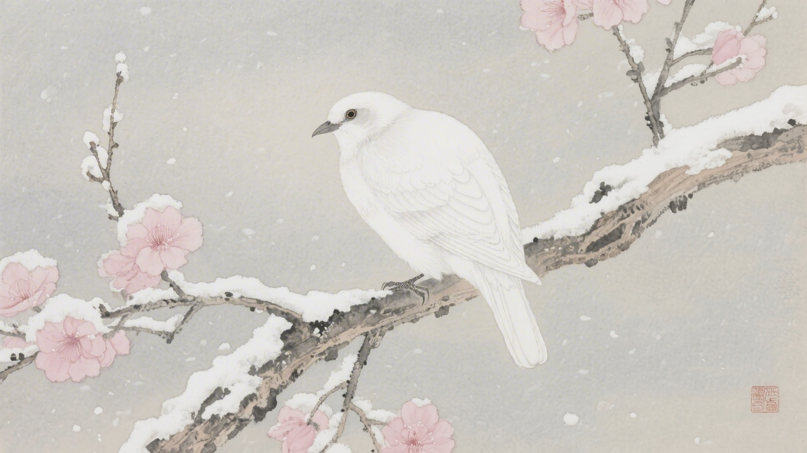
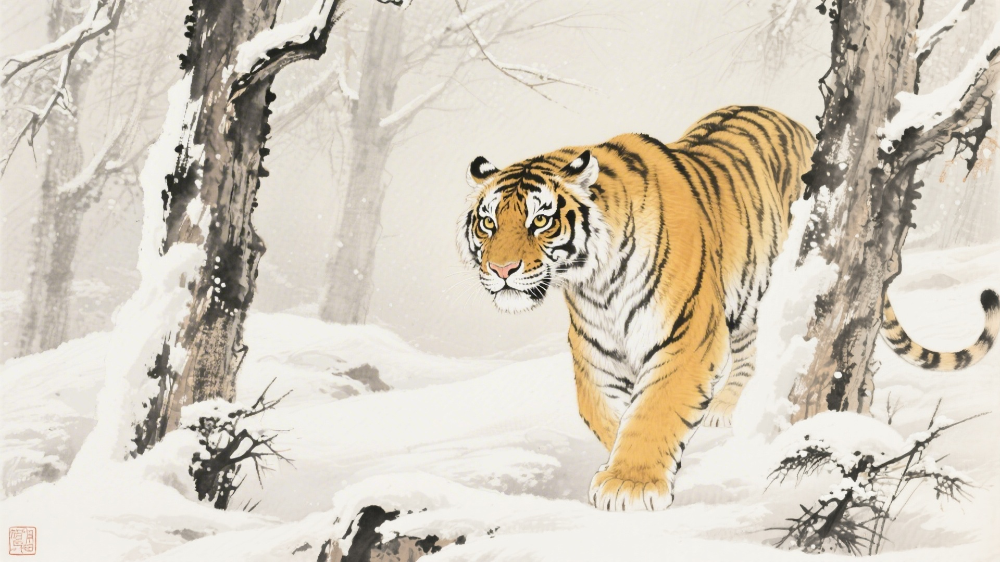
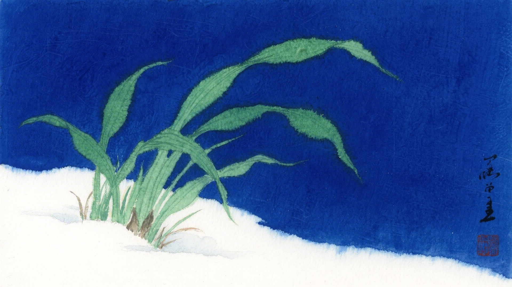
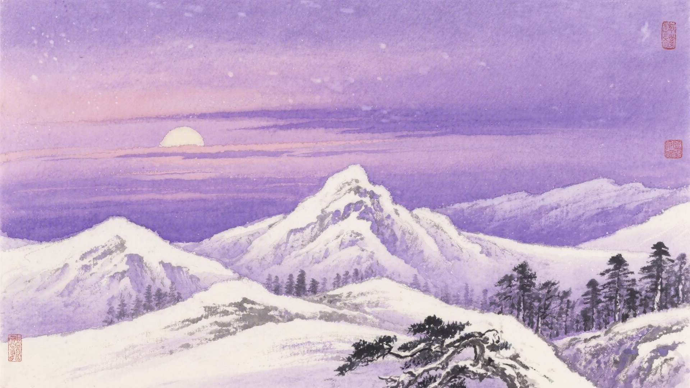
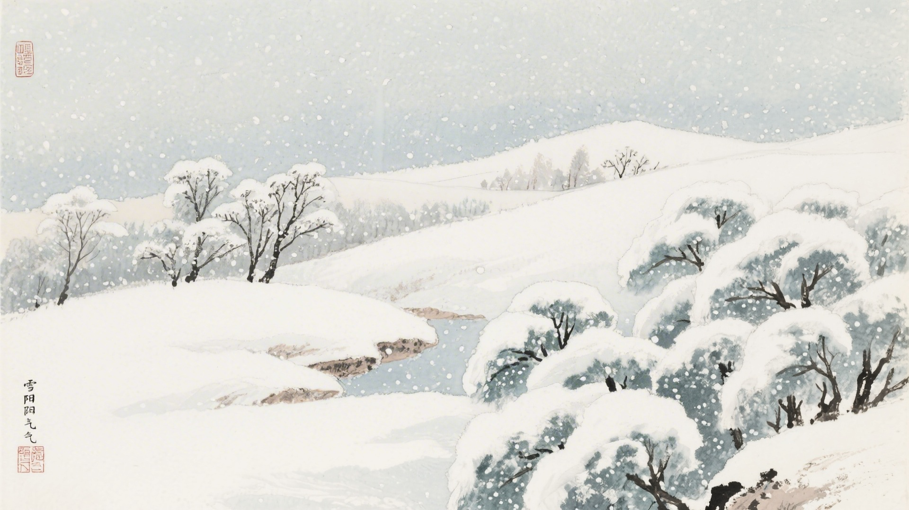

《中国传统色：故宫里的色彩美学》一书中为什么把下面这些颜色归入大雪节气？
粉米、縓缘、美人祭、鞓红
米汤娇、草白、玄校、綟绶
雀梅、油绿、莓莓、螺青
暮山紫、紫苑、优昙瑞、延维
大雪时节，鹖鴠不叫了，老虎开始交配，荔挺草长出来。古人说大雪有三候：鹖鴠不鸣，虎始交，荔挺出。这十六种颜色，便从这三候里来。
大雪的"大"，是雪大了。天地白茫茫一片，什么都看不见。颜色也躲起来，只留下一片白，白得干净，白得纯粹。
对应：大雪节气一候"鹖鴠不鸣"的起、承、转、合四色。
色彩意象：寒鸟不鸣，万籁俱寂。
从淡白到深红，是雪后天晴的颜色，也是大雪时节最温暖的过渡。

对应：大雪节气二候"虎始交"的起、承、转、合四色。
色彩意象：老虎交配，生机暗涌。
从淡黄到绿紫，是雪地里暗藏的生机，也是大雪时节最深沉的底色。

对应：大雪节气三候"荔挺出"的起、承、转、合四色（其一）。
色彩意象：荔挺草长，雪底生机。
从淡绿到青灰，是雪下植物的颜色，也是大雪时节最清冷的画面。

对应：大雪节气三候"荔挺出"的起、承、转、合四色（其二）。
色彩意象：暮色苍茫，紫气东来。
从紫灰到深紫，是大雪天黄昏的颜色，也是大雪时节最内敛的画面。

大雪这天，雪下得大了。一觉醒来，窗外白茫茫的。树枝上、屋顶上、地上，都是雪。颜色也跟着躲起来，只留下白，干干净净的白。

颜色也懂得沉默。它们不说话，不争艳，躲在雪底下睡觉。红的做梦，绿的做梦，紫的也做梦。梦里有春天，有阳光，有花开。
（以上解读不代表原书观点）